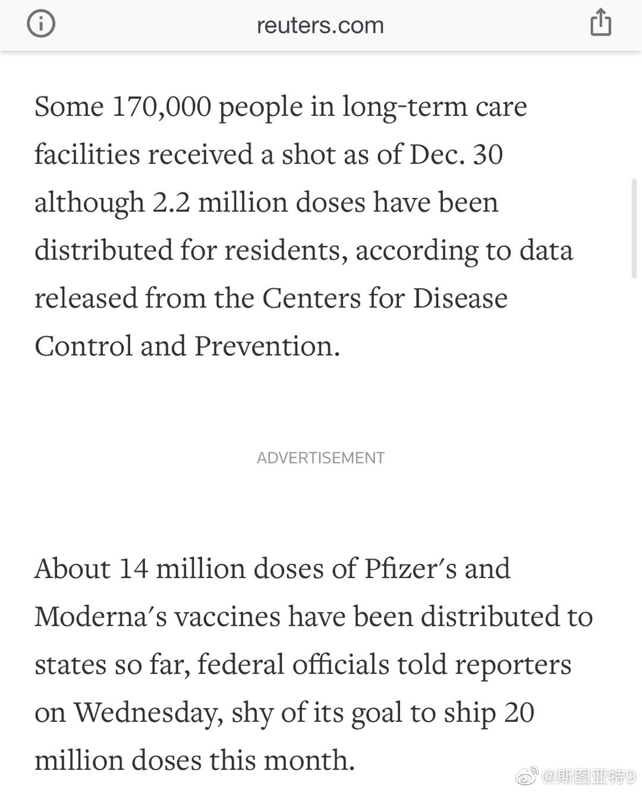

《Phallacy》 Phallacy 又是一本非常满足满足猎奇心理的科普著作。上一本让我兴致勃勃地怀着猎奇心态读完的科普图书是讲同物种互相吃的《Cannibalism》。而这本《Phallacy》则是一本讲生殖器的书。其实这本书的大部分都是在讲各种动物是如何交配的。剩下的一部分是在讲各种动物生殖器的样子，而最后一张讲了人类历史上的生殖器文化（包括讲解了这张图）。唯一不友善的地方是不认识的单词太多了。不仅物种名都不认识，连生殖器的各种别称和专业名称我也基本都不认识。
这下总统当完整了，可以心满意足的走人了吧？@斯图亚特9:奥巴马再卸任前的9月获得了唯一一次否决法案被国会覆盖。是不是川普也觉得他也得有一次，总统当得才完整？不过考虑到它还有27天就卸任了，也许共和党议员们会用这个机会表忠心一下？（的地得用对一次😜）
美国1400万支疫苗送达，仅有220万人接受注射了，其中疗养院的居民和员工只有17万人。这个执行力实在是耻辱啊。一直在说疫苗接种是现在头等重要的事，结果疫苗来了什么也没准备好。之前几个月都干什么去了？ 
@Serpens:想起10多年前认识一个当时70来岁的上海老先生，叫他Z叔。他跟我说，你知道不？现在那种拍民国上海的电视剧都有一点搞错了，当时的汽车是靠左行驶的。多年过去，看到的所有民国上海戏仍然没有一部是对的……
#原来# 新冠之前，mRNA药的版图的领跑者就是美国的摩德纳，以及德国的BioNTech、CureVac三家。摩德纳和美国NIH合作成为美国疫苗优先研发的疫苗，BioNTech和辉瑞合作，成为西方世界进展最快的两支疫苗。CureVac也有一支疫苗，他们没有找人合作，在三周前也开始了三期临床测试。但感觉中国的公司想要弯道超车： 新冠疫情引燃mRNA疫苗投资 沃森生物之后又一家公司出手 不知道会怎样。
原来中国还在建牛津疫苗的生产线： 康泰生物：仅使用部分车间即满足年产至少2亿剂新冠疫苗产能 并且计划年产4亿支。如果这可以达到的话，按照媒体报道的2021年中国疫苗量基本上是够了。从辉瑞，到俄罗斯小卫星到牛津，别的国家都是要买疫苗，中国都是要买技术自己在国内建厂。和其他各行各业都一样？
经提醒不能漏算了国药、科兴之外疫苗公司的产能，于是我我搜索了一下。康希诺： 康希诺的两次探险 所以康希诺几个月前还并没有腺病毒的生产能力，赶紧开始厂房改造。沃森医药也没有mRNA疫苗生产能力，一周前厂房已经动土了： 网页链接 最新的新闻西藏药业也开始建生产线了，虽然该公司表示并无这样的技术能力： 西藏药业新冠疫苗议案获股东会通过 2021年最少生产8000万支返销俄罗斯 不得不说，这是中国疫苗生产能力的大跃进啊。他们能不能及时生产出新冠疫苗我看很难说，但或许借机获得的产能是实打实的，可以用来布局未来？
回复@稀缺资源部落:说的对，我确实漏了那些没透露过测试数据的厂商。康希诺似乎也是两针且产能并不会太确定。我们也不能认为所有测试中的疫苗都成功，所有公司所有在建的产能都落实？还有沃森这种刚刚推倒重来的……再加一加好像还是不太够？@斯图亚特9:按照媒体引述的数据，国药在2021年产量将是10亿支，科兴6亿支，复星开始建厂希望产量2亿支。这一共是18亿支可以免免疫9亿人。这里面还要刨去各种疫苗外交要出口的疫苗，比如报道巴基斯坦要卖1.5亿支，菲律宾肯定也得不少给，阿联酋之类的零头就都不算了。怎么算2021的产量都达不到群体免疫的要求。所以到底是2021年不打算群体免疫继续六个一下去了，还是有什么别的没有披露的产量数字？
 Phallacy 又是一本非常满足满足猎奇心理的科普著作。上一本让我兴致勃勃地怀着猎奇心态读完的科普图书是讲同物种互相吃的《Cannibalism》。而这本《Phallacy》则是一本讲生殖器的书。其实这本书的大部分都是在讲各种动物是如何交配的。剩下的一部分是在讲各种动物生殖器的样子，而最后一张讲了人类历史上的生殖器文化（包括讲解了这张图）。唯一不友善的地方是不认识的单词太多了。不仅物种名都不认识，连生殖器的各种别称和专业名称我也基本都不认识。
Phallacy 又是一本非常满足满足猎奇心理的科普著作。上一本让我兴致勃勃地怀着猎奇心态读完的科普图书是讲同物种互相吃的《Cannibalism》。而这本《Phallacy》则是一本讲生殖器的书。其实这本书的大部分都是在讲各种动物是如何交配的。剩下的一部分是在讲各种动物生殖器的样子，而最后一张讲了人类历史上的生殖器文化（包括讲解了这张图）。唯一不友善的地方是不认识的单词太多了。不仅物种名都不认识，连生殖器的各种别称和专业名称我也基本都不认识。